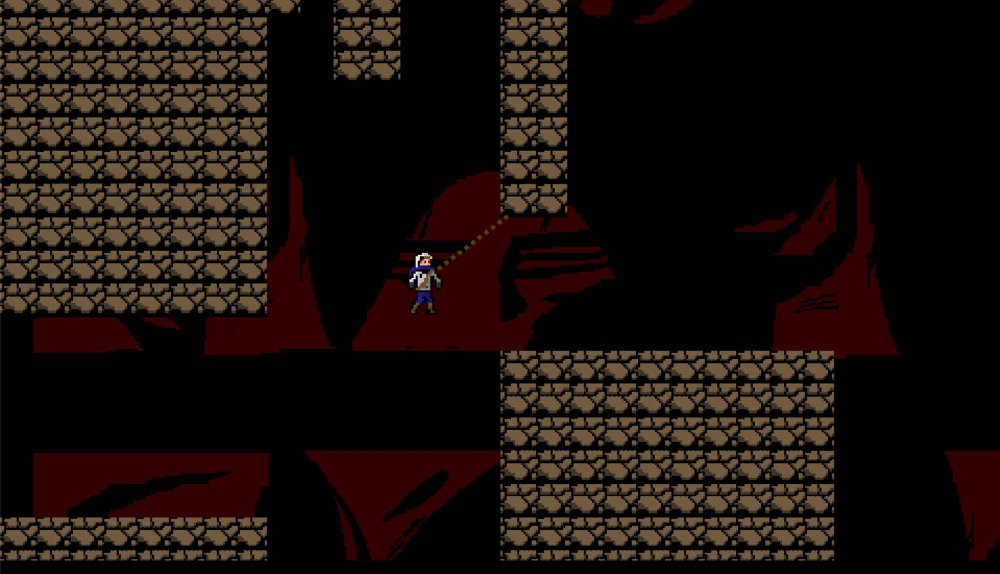

Eddy J. Tang
Projects
Ashes To Ashes By Bouyant Buffalo
For one of my classes at the University of Alberta, we were to design and fully implement a game using Microsofts Project Spark Engine (no longer available). The game was developed in a span of four months with a team of 6 members, and recieved Game of The Year Award at Edmontons Game Discovery Exhibition. Unfortunately Project Spark is no longer available, and microsoft has shut down all of their servers, but my team is currently looking into ways to retrieve a working copy to allow people to access and play our game. Please check back if you are interested.
Ashes To Ashes A re-imagined game By Bouyant Buffalo
Feeling up for making another game together, a some members of our group from our original game Ashes to Ashes came back together for a small game jam. With 3 days, we crafted a prototype of our game and its mechanics with YoYoGames GameMaker Studio. Although it is not a lot, it was a proof of concept that we were able to get the engine working since it was our first time working with it.
Prototype Level 1 Prototype Level 2SizeBook Application (Android)
For one of our classes at the University of Alberta, we were to build a simple application that would store sizes of people a user would want to input. The user would have functionality to do things such creating new entries, edit old entries, as well as view entries in full detail if they tap on the entry. The application was build for Android through Android Studios.
Link to my github repository for this project